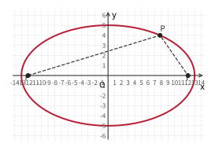
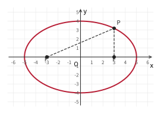
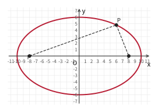

別冊練習問題 7 の解答 楕円の2焦点からの距離の和と積
(1) 楕円 \(\dfrac{x^2}{169}+\dfrac{y^2}{25}=1\) の2つの焦点を \(F,F'\) とする。楕円上の点 \(P\) について、\(PF+PF'\) の値と、\(PF\cdot PF'\) の最大値を求めよ。
焦点
\(c=\sqrt{a^2-b^2}=12\)。焦点 \(F(12,0),\ F'(-12,0)\)。

距離の和
楕円の定義：
\[PF+PF'=2a=26\]積の最大
相加・相乗平均：
\[PF\cdot PF'\leqq\left(\dfrac{PF+PF'}{2}\right)^2=169\]等号は \(PF=PF'\) のとき（\(P=(0,\pm5)\)）。最大値 \(169\)。
【答案】
\[PF+PF'=26,\ \ PF\cdot PF'\text{の最大値 }169\]答
(2) 楕円 \(\dfrac{x^2}{25}+\dfrac{y^2}{16}=1\) の2つの焦点を \(F,F'\) とする。楕円上の点 \(P\) について、\(PF+PF'\) の値と、\(PF\cdot PF'\) の最大値を求めよ。
焦点
\(c=\sqrt{a^2-b^2}=3\)。焦点 \(F(3,0),\ F'(-3,0)\)。

距離の和
楕円の定義：
\[PF+PF'=2a=10\]積の最大
相加・相乗平均：
\[PF\cdot PF'\leqq\left(\dfrac{PF+PF'}{2}\right)^2=25\]等号は \(PF=PF'\) のとき（\(P=(0,\pm4)\)）。最大値 \(25\)。
【答案】
\[PF+PF'=10,\ \ PF\cdot PF'\text{の最大値 }25\]答
(3) 楕円 \(\dfrac{x^2}{100}+\dfrac{y^2}{36}=1\) の2つの焦点を \(F,F'\) とする。楕円上の点 \(P\) について、\(PF+PF'\) の値と、\(PF\cdot PF'\) の最大値を求めよ。
焦点
\(c=\sqrt{a^2-b^2}=8\)。焦点 \(F(8,0),\ F'(-8,0)\)。

距離の和
楕円の定義：
\[PF+PF'=2a=20\]積の最大
相加・相乗平均：
\[PF\cdot PF'\leqq\left(\dfrac{PF+PF'}{2}\right)^2=100\]等号は \(PF=PF'\) のとき（\(P=(0,\pm6)\)）。最大値 \(100\)。
【答案】
\[PF+PF'=20,\ \ PF\cdot PF'\text{の最大値 }100\]答